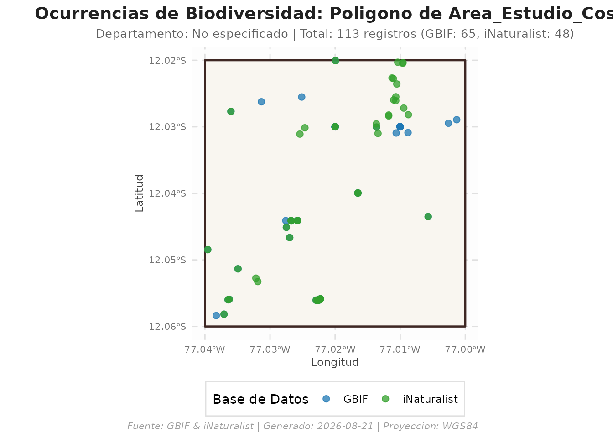
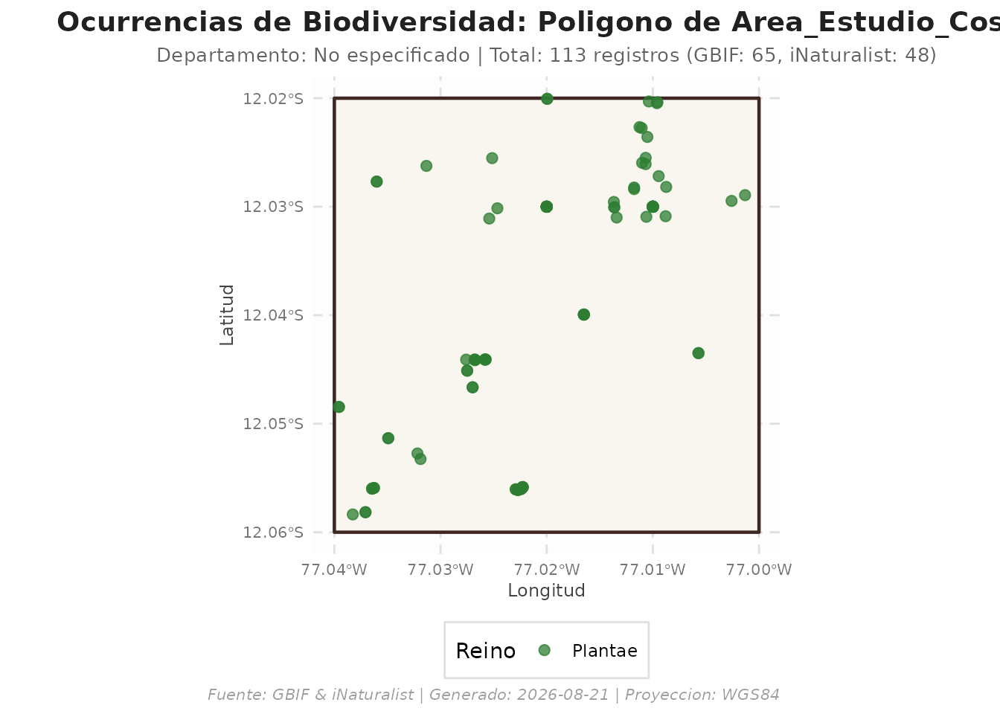

Búsqueda de Ocurrencias con Polígonos Personalizados (Shapefile, GeoJSON y sf)
Source:vignettes/busqueda_poligono_usuario.Rmd
busqueda_poligono_usuario.RmdIntroducción
Además de realizar consultas sobre las delimitaciones
político-administrativas oficiales del Perú (distritos y provincias),
peruocc ofrece la función
buscar_especies_poligono().
Esta utilidad permite delimitar áreas de estudio independientes,
tales como: * Polígonos de muestreo de campo y cuadrantes de inventario.
* Áreas Naturales Protegidas (ANP), concesiones forestales o zonas de
amortiguamiento. * Áreas de influencia directa/indirecta (buffers) de
proyectos ambientales. * Archivos espaciales en formatos estándar
(.shp, .geojson, .gpkg,
.kml).
1. Carga de Librerías y Configuración
Cargamos peruocc y sf para el manejo de
geometrías vectoriales:
library(peruocc)
library(sf)
#> Linking to GEOS 3.12.1, GDAL 3.8.4, PROJ 9.4.0; sf_use_s2() is TRUE
library(ggplot2)
# Configurar el directorio de trabajo para artefactos y caché
peruocc_data_dir("peruocc-output")2. Creación de un Polígono de Estudio Personalizado
Podemos definir cualquier geometría poligonal en R. En este ejemplo, creamos un polígono rectangular de interés biológico en la costa central del Perú (alrededor de los humedales y costa de Lima):
# Coordenadas de los vértices del polígono (WGS84: Longitud, Latitud)
coordenadas <- matrix(
c(
-77.04, -12.06,
-77.00, -12.06,
-77.00, -12.02,
-77.04, -12.02,
-77.04, -12.06
),
ncol = 2,
byrow = TRUE
)
# Construir el objeto sf con proyección geográfica EPSG:4326 (WGS84)
mi_zona_estudio <- sf::st_as_sf(
sf::st_sfc(sf::st_polygon(list(coordenadas)), crs = 4326)
)
print(mi_zona_estudio)
#> Simple feature collection with 1 feature and 0 fields
#> Geometry type: POLYGON
#> Dimension: XY
#> Bounding box: xmin: -77.04 ymin: -12.06 xmax: -77 ymax: -12.02
#> Geodetic CRS: WGS 84
#> x
#> 1 POLYGON ((-77.04 -12.06, -7...3. Consulta Integrada de Biodiversidad:
buscar_especies_poligono()
Ejecutamos la búsqueda de flora dentro del polígono creado.
peruocc gestiona automáticamente: 1. La consulta síncrona a
GBIF con simplificación adaptativa WKT en UTM. 2. La
consulta a iNaturalist por Bounding Box. 3. El
recorte espacial exacto en memoria
(sf::st_intersects) para asegurar que cada punto
caiga estrictamente dentro de la geometría. 4. La estandarización y
deduplicación bajo el estándar Darwin Core.
resultado_personalizado <- buscar_especies_poligono(
poligono = mi_zona_estudio,
nombre = "Area_Estudio_Costa",
grupo = "flora",
limite_por_api = 25
)
#> =====================================================================
#> BUSQUEDA INTEGRADA EN POLIGONO PERSONALIZADO: AREA_ESTUDIO_COSTA
#> Grupo: flora
#> =====================================================================
#>
#> [LOTE] Procesando 4 lote(s) espaciales. Los resultados completados se guardan en '/home/runner/work/peruocc/peruocc/vignettes/peruocc-output/cache/consultas_ocurrencias'.
#> [GBIF] Iniciando busqueda de ocurrencias...
#> [GBIF] Filtrando por reino Plantae (Flora).
#> [GBIF] Consultando registros dentro del poligono de 'Unidad seleccionada' (limite: 25)...
#> [GBIF] Busqueda finalizada. Se filtraron 25 registros que caen dentro del poligono seleccionado.
#> [iNaturalist] Iniciando busqueda de ocurrencias...
#> [iNaturalist] Filtrando por reino Plantae (Flora).
#> [iNaturalist] Consultando registros dentro de la caja delimitadora de 'Unidad seleccionada' (limite: 25)...
#> [iNaturalist] Se descargaron 25 registros en la caja delimitadora. Aplicando filtro espacial...
#> [iNaturalist] Busqueda finalizada. 25 de 25 registros caen dentro del poligono seleccionado.
#> [GBIF] Iniciando busqueda de ocurrencias...
#> [GBIF] Filtrando por reino Plantae (Flora).
#> [GBIF] Consultando registros dentro del poligono de 'Unidad seleccionada' (limite: 25)...
#> [GBIF] Busqueda finalizada. Se filtraron 1 registros que caen dentro del poligono seleccionado.
#> [iNaturalist] Iniciando busqueda de ocurrencias...
#> [iNaturalist] Filtrando por reino Plantae (Flora).
#> [iNaturalist] Consultando registros dentro de la caja delimitadora de 'Unidad seleccionada' (limite: 25)...
#> [iNaturalist] Se descargaron 1 registros en la caja delimitadora. Aplicando filtro espacial...
#> [iNaturalist] Busqueda finalizada. 1 de 1 registros caen dentro del poligono seleccionado.
#> [GBIF] Iniciando busqueda de ocurrencias...
#> [GBIF] Filtrando por reino Plantae (Flora).
#> [GBIF] Consultando registros dentro del poligono de 'Unidad seleccionada' (limite: 25)...
#> [GBIF] Busqueda finalizada. Se filtraron 14 registros que caen dentro del poligono seleccionado.
#> [iNaturalist] Iniciando busqueda de ocurrencias...
#> [iNaturalist] Filtrando por reino Plantae (Flora).
#> [iNaturalist] Consultando registros dentro de la caja delimitadora de 'Unidad seleccionada' (limite: 25)...
#> [iNaturalist] Se descargaron 14 registros en la caja delimitadora. Aplicando filtro espacial...
#> [iNaturalist] Busqueda finalizada. 13 de 14 registros caen dentro del poligono seleccionado.
#> [GBIF] Iniciando busqueda de ocurrencias...
#> [GBIF] Filtrando por reino Plantae (Flora).
#> [GBIF] Consultando registros dentro del poligono de 'Unidad seleccionada' (limite: 25)...
#> [GBIF] Busqueda finalizada. Se filtraron 25 registros que caen dentro del poligono seleccionado.
#> [iNaturalist] Iniciando busqueda de ocurrencias...
#> [iNaturalist] Filtrando por reino Plantae (Flora).
#> [iNaturalist] Consultando registros dentro de la caja delimitadora de 'Unidad seleccionada' (limite: 25)...
#> [iNaturalist] Se descargaron 9 registros en la caja delimitadora. Aplicando filtro espacial...
#> [iNaturalist] Busqueda finalizada. 9 de 9 registros caen dentro del poligono seleccionado.
#>
#> [RESULTADO] Consolidacion exitosa. Total de registros unificados: 113
#> Origen Registros
#> 1 GBIF 65
#> 2 iNaturalist 48
#> 3 Total 1134. Inspección de los Resultados Obtenidos
El objeto devuelto contiene la estructura estándar de
peruocc:
# Resumen de registros por base de datos
print(resultado_personalizado$resumen)
#> $nivel
#> [1] "poligono"
#>
#> $unidad
#> [1] "Area_Estudio_Costa"
#>
#> $distrito
#> [1] NA
#>
#> $provincia
#> [1] NA
#>
#> $departamento
#> [1] NA
#>
#> $total_registros
#> [1] 113
#>
#> $registros_gbif
#> [1] 65
#>
#> $registros_inat
#> [1] 48
#>
#> $limite_por_api
#> [1] 25
#>
#> $gbif_total_reportado_api
#> [1] NA
#>
#> $inat_total_reportado_api
#> [1] NA
#>
#> $gbif_descarga_completa_api
#> [1] FALSE
#>
#> $inat_descarga_completa_api
#> [1] FALSE
#>
#> $lotes_espaciales
#> [1] 4
#>
#> $fallos_lotes
#> character(0)
#>
#> $nota_cobertura
#> [1] "Se solicito una muestra limitada por API; la cobertura puede estar truncada."
# Vista previa de las primeras ocurrencias
head(resultado_personalizado$ocurrencias[, c("scientificName", "source", "eventDate", "decimalLatitude", "decimalLongitude")])
#> scientificName source eventDate
#> NA...1 Washingtonia robusta H.Wendl. GBIF 2026-04-30T11:39:05
#> NA.1...2 Fragaria vesca L. GBIF 2025-05-01T12:24
#> NA.2...3 Annona cherimola Mill. GBIF 2025-05-03T09:07
#> NA.3...4 Passiflora edulis Sims GBIF 2025-06-21T11:49:59
#> NA.4...5 Urtica urens L. GBIF 2025-08-20T17:38:53
#> NA.5...6 Sonchus asper (L.) Hill GBIF 2025-10-15T14:47
#> decimalLatitude decimalLongitude
#> NA...1 -12.05598 -77.03645
#> NA.1...2 -12.03994 -77.01650
#> NA.2...3 -12.03994 -77.01650
#> NA.3...4 -12.04664 -77.02698
#> NA.4...5 -12.05815 -77.03707
#> NA.5...6 -12.05133 -77.034925. Visualización Cartográfica con
graficar_ocurrencias()
Podemos generar composiciones en ggplot2 superponiendo
el polígono con las observaciones:
A. Clasificación por Proveedor de Datos (GBIF vs iNaturalist)
mapa_fuentes <- graficar_ocurrencias(
resultado_lista = resultado_personalizado,
color_por = "source"
)
print(mapa_fuentes)
B. Clasificación por Reino Taxonómico
mapa_reinos <- graficar_ocurrencias(
resultado_lista = resultado_personalizado,
color_por = "kingdom"
)
print(mapa_reinos)
6. Consulta desde un Archivo en Disco (Shapefile / GeoJSON)
buscar_especies_poligono() también acepta directamente
una ruta a un archivo espacial en disco (.shp,
.geojson, .gpkg o .kml).
Para demostrarlo, guardamos el polígono en un archivo
.geojson y ejecutamos la consulta directamente desde la
ruta:
# 1. Guardar el polígono temporalmente como archivo GeoJSON
ruta_capa <- file.path(tempdir(), "mi_reserva.geojson")
sf::st_write(mi_zona_estudio, ruta_capa, quiet = TRUE, delete_dsn = TRUE)
# 2. Consultar directamente pasando la ruta del archivo
resultado_desde_archivo <- buscar_especies_poligono(
poligono = ruta_capa,
nombre = "Reserva_Local",
grupo = "flora",
limite_por_api = 15
)
#> =====================================================================
#> BUSQUEDA INTEGRADA EN POLIGONO PERSONALIZADO: RESERVA_LOCAL
#> Grupo: flora
#> =====================================================================
#>
#> [LOTE] Procesando 4 lote(s) espaciales. Los resultados completados se guardan en '/home/runner/work/peruocc/peruocc/vignettes/peruocc-output/cache/consultas_ocurrencias'.
#> [GBIF] Iniciando busqueda de ocurrencias...
#> [GBIF] Filtrando por reino Plantae (Flora).
#> [GBIF] Consultando registros dentro del poligono de 'Unidad seleccionada' (limite: 15)...
#> [GBIF] Busqueda finalizada. Se filtraron 15 registros que caen dentro del poligono seleccionado.
#> [iNaturalist] Iniciando busqueda de ocurrencias...
#> [iNaturalist] Filtrando por reino Plantae (Flora).
#> [iNaturalist] Consultando registros dentro de la caja delimitadora de 'Unidad seleccionada' (limite: 15)...
#> [iNaturalist] Se descargaron 15 registros en la caja delimitadora. Aplicando filtro espacial...
#> [iNaturalist] Busqueda finalizada. 15 de 15 registros caen dentro del poligono seleccionado.
#> [GBIF] Iniciando busqueda de ocurrencias...
#> [GBIF] Filtrando por reino Plantae (Flora).
#> [GBIF] Consultando registros dentro del poligono de 'Unidad seleccionada' (limite: 15)...
#> [GBIF] Busqueda finalizada. Se filtraron 1 registros que caen dentro del poligono seleccionado.
#> [iNaturalist] Iniciando busqueda de ocurrencias...
#> [iNaturalist] Filtrando por reino Plantae (Flora).
#> [iNaturalist] Consultando registros dentro de la caja delimitadora de 'Unidad seleccionada' (limite: 15)...
#> [iNaturalist] Se descargaron 1 registros en la caja delimitadora. Aplicando filtro espacial...
#> [iNaturalist] Busqueda finalizada. 1 de 1 registros caen dentro del poligono seleccionado.
#> [GBIF] Iniciando busqueda de ocurrencias...
#> [GBIF] Filtrando por reino Plantae (Flora).
#> [GBIF] Consultando registros dentro del poligono de 'Unidad seleccionada' (limite: 15)...
#> [GBIF] Busqueda finalizada. Se filtraron 6 registros que caen dentro del poligono seleccionado.
#> [iNaturalist] Iniciando busqueda de ocurrencias...
#> [iNaturalist] Filtrando por reino Plantae (Flora).
#> [iNaturalist] Consultando registros dentro de la caja delimitadora de 'Unidad seleccionada' (limite: 15)...
#> [iNaturalist] Se descargaron 14 registros en la caja delimitadora. Aplicando filtro espacial...
#> [iNaturalist] Busqueda finalizada. 13 de 14 registros caen dentro del poligono seleccionado.
#> [GBIF] Iniciando busqueda de ocurrencias...
#> [GBIF] Filtrando por reino Plantae (Flora).
#> [GBIF] Consultando registros dentro del poligono de 'Unidad seleccionada' (limite: 15)...
#> [GBIF] Busqueda finalizada. Se filtraron 15 registros que caen dentro del poligono seleccionado.
#> [iNaturalist] Iniciando busqueda de ocurrencias...
#> [iNaturalist] Filtrando por reino Plantae (Flora).
#> [iNaturalist] Consultando registros dentro de la caja delimitadora de 'Unidad seleccionada' (limite: 15)...
#> [iNaturalist] Se descargaron 9 registros en la caja delimitadora. Aplicando filtro espacial...
#> [iNaturalist] Busqueda finalizada. 9 de 9 registros caen dentro del poligono seleccionado.
#>
#> [RESULTADO] Consolidacion exitosa. Total de registros unificados: 75
#> Origen Registros
#> 1 GBIF 37
#> 2 iNaturalist 38
#> 3 Total 75
# 3. Exportar resultados con manifiesto de reproducibilidad
exportar_resultados(resultado_desde_archivo)
#> [ARCHIVO] Registros tabulares guardados en: '/home/runner/work/peruocc/peruocc/vignettes/peruocc-output/processed/ocurrencias_20260821T063231Z_poligono_reservalocal_flora.csv'
#> [ARCHIVO] Capa espacial GeoJSON guardada en: '/home/runner/work/peruocc/peruocc/vignettes/peruocc-output/processed/ocurrencias_20260821T063231Z_poligono_reservalocal_flora.geojson'
#> [ARCHIVO] Manifiesto guardado en: '/home/runner/work/peruocc/peruocc/vignettes/peruocc-output/processed/manifiesto_20260821T063231Z_poligono_reservalocal_flora.json'Conclusión
La función buscar_especies_poligono() extiende la
versatilidad de peruocc, permitiendo integrar inventarios
biológicos y análisis de biodiversidad sobre cualquier área geográfica
en el Perú sin depender exclusivamente de límites políticos distritales
o provinciales.